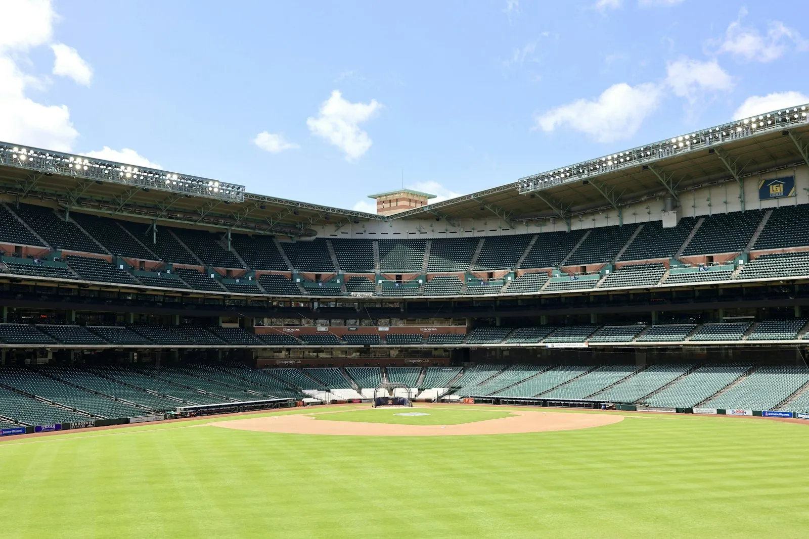

Minor League Baseball Road Trip: Small-Town California
· By GoldenPath Guide Editorial Team
California loves baseball with real intensity, but while the big-league stadiums tower, the minor league ballparks offer something warmer — a place where families and friends lean into the bleachers and cheer together. Linking small stadiums into a road trip is a way to feel the community that baseball builds. The grass gives off that warm, cut smell under the lights, and the first crack of a bat still quiets a crowd like nothing else.
Under those summer-night lights, each town’s own fight song and playlist washes the day away.
Sutter Health Park: Sacramento River Cats
In the capital, Sutter Health Park hosts the River Cats, trading ocean waves for easy riverside calm. A downtown ballpark framed by Capitol views, it’s a great pairing of travel and baseball — and after the final out, a farm-to-fork dinner closes the day well.
Excite Ballpark: San Jose
Excite Ballpark in San Jose is a small, neatly tended, friendly yard. Sitting on the corridor between the Central Coast and Silicon Valley, it flows naturally into a post-game road trip, and the floodlit night games bring extra buzz under the lights.
Valley Strong Ballpark: Visalia Rawhide
Out in the Central Valley, Rawhide play in Visalia at Valley Strong Ballpark. Wide orchards frame the horizon, and just watching a midsummer game from the stands is calming. Visalia also sits on the road to the Sierra Nevada, so you can pair a national park by day with baseball by night.
The Diamond: Lake Elsinore Storm
Surrounded by mountains, The Diamond in Lake Elsinore is a scenery standout, known for the Storm’s rallies and playful opening events. These mid-sized parks are packed close together across the state, which makes a ballpark pilgrimage feel that much richer. Below the mountains the field glows green against the dusk, and the smell of churros drifts through the concourse.
A minor league tour is a wonderful way to build a route, and often the night’s playlist and a child’s laugh outshines the score. By the ninth the lights hum overhead and nobody is in a hurry to leave.
Tickets, Promotions and Bark in the Park
Minor-league pricing is the sport's best value. Box seats at Sutter Health Park (Sacramento River Cats) run $20 to $30, berm and lawn seats $10 to $14; San Jose's Excite Ballpark prices similarly, while Visalia and Lake Elsinore Single-A parks sell reserved seats at $10 to $15 and lawn spots under $10. Every park runs weekly promotions: Tuesday discount nights, Thursday drink specials, Friday fireworks (22-plus dates a season in Sacramento) and Sunday family days with pregame catch on the field. Bark in the Park nights, usually monthly, admit dogs with a $5 pet ticket benefiting shelters. Group nights of 20-plus cut per-ticket prices 20 percent. Buy Friday and Saturday games a week ahead online ($2 to $3 fee beats the sold-out gate); Tuesday-through-Thursday games take walk-ups. Park in official lots at $10 to $15 in Sacramento and San Jose, free or $5 at the smaller parks.
Ballpark Food Worth the Money
Each park's signature item beats the generic hot dog. Sacramento's Sutter Health Park serves the Raley Field burger stacks and tri-tip sandwiches at $12 to $16, plus local craft pours near $10. San Jose's Excite Ballpark runs the Turkey Mike's barbecue stand with $13 sandwiches locals cross town for. Visalia's Rawhide park leans Central Valley: street tacos at $3 to $4 each and agua frescas under $5. Lake Elsinore's Diamond serves the Stormin' nacho helmet ($14, feeds two) that photographs as well as it eats. All four parks allow sealed water bottles — bring one, since bottled water runs $5 inside. Kids-eat-free Sundays appear on several promotional calendars; check each team's site the week of the trip. Skip the third-party food-delivery stands outside the gates; inside, lines run shortest in the second inning.
Getting There and Day-Trip Pairings
The four parks string into a long-weekend loop: San Jose to Sacramento runs 120 miles via I-680 and I-80 (two hours), Sacramento to Visalia 250 miles down Highway 99 (four hours), Visalia to Lake Elsinore 230 miles via Bakersfield (four hours). Pair San Jose with a day in Santa Cruz (35 miles) or Sacramento with Old Sacramento and the Railroad Museum ($12 admission, 10 minutes from the park). Visalia pairs with Sequoia National Park's entrance 45 minutes east — do the General Sherman morning, baseball night. Lake Elsinore pairs with Temecula wine country 20 minutes south; several tasting rooms pour $25 flights until 5 p.m., ahead of first pitch. Day games in the Central Valley run hot — May and September Sundays beat July Saturdays by 15 degrees. Weeknight first pitches at 6:30 to 7 p.m. dodge both heat and traffic.
Souvenirs, Autographs and Scorekeeping
Arrive when gates open — usually 60 minutes before first pitch — for batting-practice autographs along the rail; players sign most at the Single-A parks. Team stores sell caps at $25 to $35 and mini-bats near $12, cheaper than any major-league equivalent. Scorecards cost $1 to $2 at the souvenir stand and turn a casual night into a skill kids keep for years.
All Destinations
The Ultimate California Road Trip
Sacramento & the State Capitol